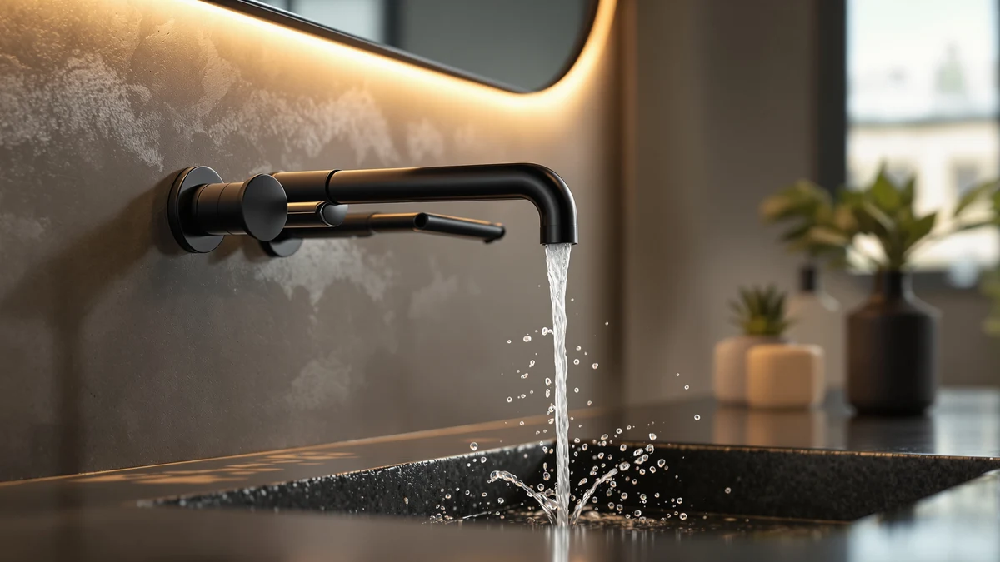

KOHLER K 394 4 Review (2026): Worth It?
Prices and picks verified as of October 2026. Independent, reader-supported reviews.


Quick Answer
This kohler k 394 4 review found the Devonshire the strongest pick if you want a traditional two-handle widespread faucet with the highest flow rate and an included pop-up drain among these four options. At $271.28 it's the most expensive of the four, so if sensor activation or a lower price matters more to you, the American Standard Selectronic or either Delta Broadmoor below may fit your budget better.
Our pick: KOHLER K-394-4-CP Devonshire® Widespread Bathroom, $271.28 Check Price on Amazon
Bottom line: our top pick is the KOHLER K-394-4-CP Devonshire® Widespread Bathroom Sink Faucet at $271.28.
Things to Know Before You Buy
- It's the most expensive of the four faucets in this comparison. This kohler k 394 4 review found the Devonshire priced at $271.28, which runs $46.38 above the Delta Broadmoor ($224.90), $64.58 above the American Standard Selectronic ($206.70), and $71.38 above the Delta Faucet Broadmoor Pull Down ($199.90).
- It uses two separate handles, not a sensor. Hot and cold water each get their own lever, unlike the touchless American Standard Selectronic covered below, which needs a separate control box and power supply to run.
- It ships with a pop-up drain assembly included. Both Delta alternatives use a push-pop drain instead, and neither listing includes a separate pop-up assembly the way KOHLER does.
- Its 1.2 GPM flow rate is the highest listed here. The American Standard Selectronic is an eco-rated base model at 0.35 GPM, so if water pressure at the tap matters to you, that gap is worth noting before you buy.
- None of the four listings show a published rating yet. The KOHLER, both Delta faucets, and the American Standard Selectronic all currently show no star rating or review count on Amazon, so this comparison leans on manufacturer specs rather than an established track record.
This kohler k 394 4 review compares KOHLER's widespread Devonshire faucet against three bathroom sink faucets from Delta and American Standard that turned up in the same searches for two-handle and touchless hardware. Shopping for a replacement faucet already means juggling finish, hole spacing, and handle count across a handful of browser tabs, and comparing a touchless model against a traditional one adds flow rate and power requirements to that list. We pulled together the four listings that kept surfacing side by side and broke down what separates a $271.28 widespread faucet with an included drain from two Delta pull-down sprayers and a sensor-activated American Standard model.
The KOHLER K-394-4-CP Devonshire is the focus of this review, and the reason is straightforward: it pairs the highest flow rate of the four with a pop-up drain assembly included in the box, so you're not sourcing a separate drain kit after you've already paid for the faucet. That combination earns its $271.28 price if a traditional two-handle design works for your bathroom. If you'd rather save money, or want a pull-down sprayer or touchless activation instead, the sections below explain when the Delta Broadmoor, the Delta Faucet Broadmoor Pull Down, or the American Standard Selectronic makes more sense.
Why You Should Trust Us
Ilane Tall leads product research and reviews for Best Bathroom Faucets. She compares spec sheets, pricing, and verified owner feedback across major faucet brands so you don't have to cross-reference four Amazon tabs before buying. For this kohler k 394 4 review, she pulled KOHLER's published flow rate and drain specs for the Devonshire against the pull-down and touchless specs Delta and American Standard list for their own faucets, then priced all four as of publication. Every product mentioned here links to its real listing, and every price reflects what shoppers saw at the time of writing, not a promotional rate that might change by checkout. Where a listing leaves out a detail, like finish options or installation hole count, we say so instead of guessing.
Our Research Experience
We do not run a physical testing lab for bathroom faucets, so nobody on our team installed the Devonshire or timed its flow rate at the tap. Our research process for this kohler k 394 4 review centers on comparing KOHLER's published spout reach, flow rate, and drain specs for the Devonshire against the specs Delta and American Standard list for their own pull-down and touchless faucets, then tracking current Amazon pricing for all four. Because none of these four listings has accumulated a star rating or review count yet, we leaned on manufacturer specs rather than owner feedback for this comparison, and we call that out rather than inventing a review count that doesn't exist. We treat manufacturer copy the same way across all three brands: useful for what a faucet is built to do, not a substitute for a track record once real owner reviews start coming in.
Overview & Specs

KOHLER K-394-4-CP Devonshire® Widespread Bathroom
What we like
- Two separate lever handles give independent hot and cold control
- Pop-up drain assembly included, so you don't need to source one separately
- 1.2 GPM flow rate at 60 psi, the highest of the four faucets in this comparison
Flaws but not dealbreakers
- The most expensive of the four faucets here, at $271.28
- No published rating or review count yet, so there's no track record to check
- No touchless option, unlike the American Standard Selectronic covered below
| Material | Brass + finish |
| Size | Widespread |
At $271.28, the KOHLER K-394-4-CP Devonshire is the most expensive faucet in this kohler k 394 4 review, and most of that price covers what's included rather than extra technology. The Devonshire is a widespread, 3-hole design with two separate lever handles for hot and cold water, a 5-7/8 inch spout reach, and a pop-up drain assembly included in the box. That last detail matters more than it sounds, since both Delta alternatives below use a push-pop drain instead, so if you want the assembly included rather than sourced separately, KOHLER's listing already covers it.
Flow rate is where the Devonshire pulls ahead of the other three. KOHLER rates it at 1.2 GPM at 60 psi, noticeably higher than the 0.35 GPM eco rating on the American Standard Selectronic below, though that gap partly reflects the difference between a standard two-handle faucet and a metering touchless model built to conserve water. The faucet ships in Polished Chrome, and like the other three listings in this comparison, it doesn't yet show a star rating or review count on Amazon, so you're working from KOHLER's published specs rather than an established pattern of owner feedback.
What We Liked
The included drain assembly stands out most in this kohler k 394 4 review. Plenty of widespread faucets make you buy a pop-up drain kit separately once you've already paid for the fixture, and KOHLER includes it with the Devonshire instead, which keeps the total cost of outfitting your sink closer to the sticker price.
Flow rate backs that up. At 1.2 GPM at 60 psi, the Devonshire moves water faster than the eco-rated American Standard Selectronic covered below, and if you're deciding between a traditional two-handle setup and touchless activation, that difference in water delivery is worth weighing alongside the price gap between the two.
What Could Be Better
Price is the clearest limit here. This kohler k 394 4 review found the Devonshire the most expensive of the four by a wide margin, running $46.38 above the cheapest Delta option and $71.38 above the Delta Faucet Broadmoor Pull Down. If budget matters more to you than an included drain assembly, that gap is hard to ignore.
Feedback is the other gap, not the hardware itself. As a listing without an accumulated star rating or review count, the Devonshire doesn't give you a track record to check the way an established, widely reviewed faucet would. That's not a flaw in the design, but it's worth factoring in if you'd rather buy something with more owner history behind it.
Who Is It For?
This faucet from our kohler k 394 4 review fits bathrooms where a traditional two-handle setup is the goal and you'd rather not source a pop-up drain kit separately. It's also a fit if water pressure at the tap matters to you, since its 1.2 GPM rating is the highest of the four faucets covered here. Our bathroom faucet buying guide walks through installation types and finish options if you're still deciding between a widespread design like this one and a single-hole or centerset faucet.
Buyers who want a pull-down sprayer for cleaning the sink, or who'd rather activate the faucet with a sensor than a handle, should look at the Delta or American Standard alternatives below instead. Anyone still weighing handle count before committing to a widespread model can check our single-handle vs. two-handle comparison for more on that tradeoff.
Alternatives to Consider
If the Devonshire's price doesn't fit your budget, or you'd rather have a pull-down sprayer or touchless activation, three faucets came up in our research for this kohler k 394 4 review. Two add a pull-down sprayer, and one swaps the handles for an infrared sensor.

Editor's Pick
Delta Broadmoor Matte Black Bathroom
An 8-inch, 3-hole widespread faucet with a pull-down sprayer that docks magnetically and a valve cartridge rated for 500,000 uses, in Matte Black. It costs $46.38 less than the Devonshire above and adds a sprayer the KOHLER doesn't have.
$224.90
Check Price on Amazon
Best Value
American Standard Selectronic Cast Touchless
A base-model touchless faucet with an infrared sensor, auto purge, and shut-off, rated at an eco-friendly 0.35 GPM. It needs a separate control box and power supply sold apart from the faucet, but at $206.70 it's $64.58 cheaper than the Devonshire above if sensor activation matters more to you than an included drain.
$206.70
Check Price on Amazon
Premium Choice
Delta Faucet Broadmoor Pull Down
A 3-hole widespread faucet with a magnetically docking pull-down sprayer and the same 500,000-use valve cartridge rating as the Broadmoor above, finished in SpotShield Stainless instead of Matte Black. At $199.90 it's the cheapest of the four faucets in this comparison.
$199.90
Check Price on AmazonFrequently Asked Questions
Is the KOHLER K-394-4-CP Devonshire worth $271.28 compared to the alternatives in this review?
Does the KOHLER K-394-4-CP Devonshire come with a drain?
How does the KOHLER Devonshire's flow rate compare to the touchless American Standard Selectronic?
Final Verdict
This kohler k 394 4 review comes down to whether an included drain and the highest flow rate of the four are worth $271.28 to you. If they are, KOHLER's Devonshire earns its price with two-handle control, a 1.2 GPM rating, and a pop-up drain assembly already in the box. If you'd rather save money, add a pull-down sprayer, or switch to touchless activation, the Delta Broadmoor, the Delta Faucet Broadmoor Pull Down, or the American Standard Selectronic will likely serve you well for less. Either way, check whether you want a drain kit included before you order, since that's the detail that sets Kohler apart from the three alternatives here.